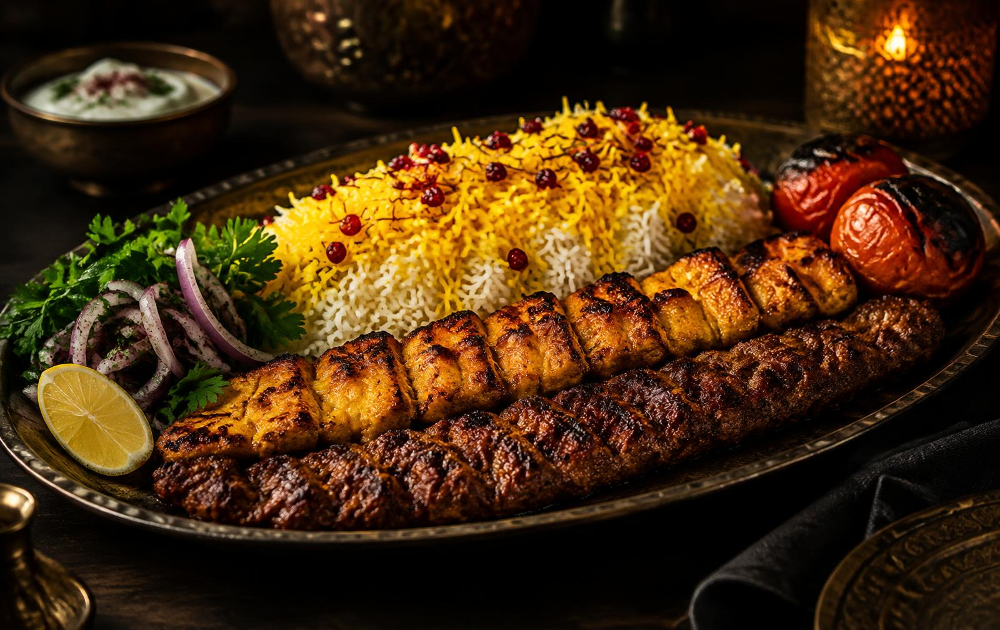
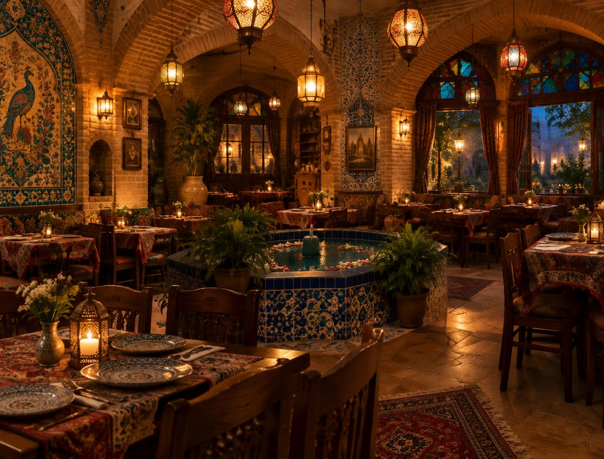

Zhoopin Restaurant · تهران
رستوران ژوپین
کباب و جوجهی ایرانی، برای دورهمیهای خانوادگی و دوستانه؛ صرف غذا در محل و بیرونبر.
درباره ما
طعم کباب، کنار جمع خانواده
رستوران ژوپین در تهران، در مجموعهی قنادی مرسی بانو قرار دارد. اینجا میتوانید پلو و کباب، جوجه و مخلفات ایرانی را در محل میل کنید یا بیرونبر بگیرید. مهمانان ما آن را گزینهای مقرونبهصرفه برای مهمانیهای خانوادگی میدانند.
مناسب دورهمی و مهمانی خانوادگی

خدمات
چه چیزی در ژوپین منتظر شماست
صرف غذا در محل
فضایی برای دورهمیهای دوستانه و خانوادگی.
غذای بیرونبر
سفارش خود را بگیرید و در خانه میل کنید.
موسیقی زنده
به گفتهی مهمانان، برخی شبها اجرای زنده دارد.
جای پارک
مهمانان از جای پارک مناسب جلوی رستوران گفتهاند.
برای اطلاع از منو و قیمتهای روز، با رستوران تماس بگیرید.
تماس و مسیر
به ژوپین سر بزنید
-
تهران، واقع در قنادی مرسی بانو
Q8CF+7H Tehran - ۰۲۱-۴۴۸۴۱۴۳۰
- ساعات کاری: لطفاً پیش از مراجعه تماس بگیرید.